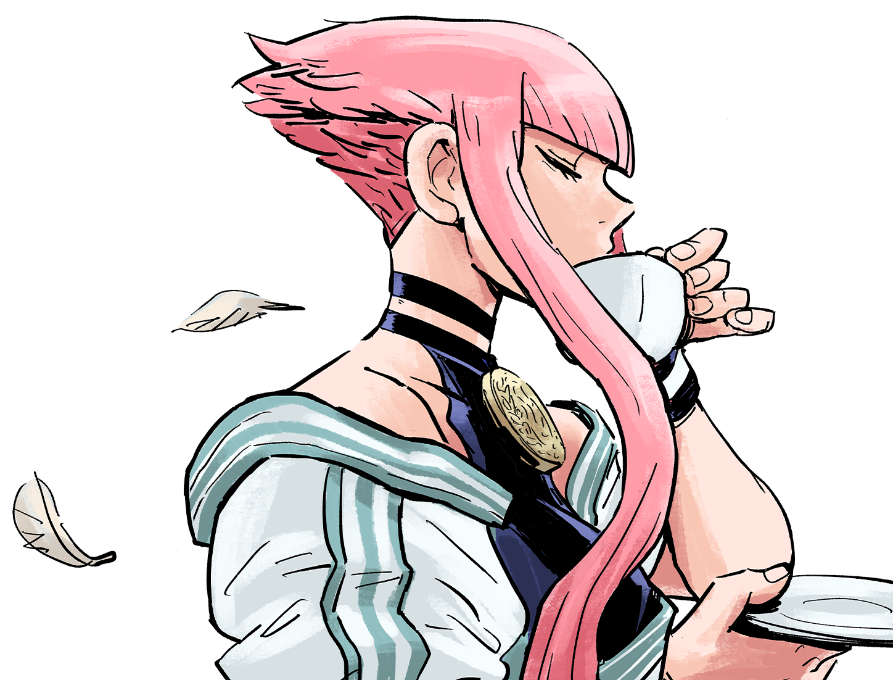
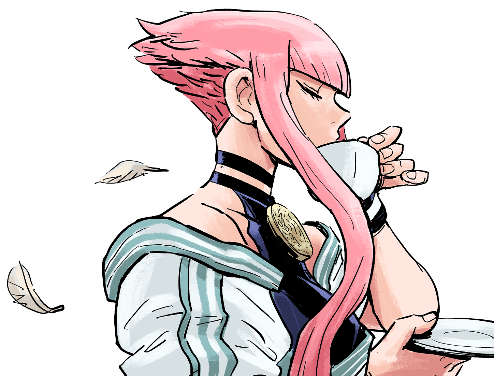

Personagens e sua Frame Data

 

O que é Frame Data?
Para entender o Frame Data, primeiro precisamos entender como o jogo se move. Street Fighter 6 roda a 60 quadros por segundo (60 FPS). Isso significa que 1 segundo de luta é composto por 60 imagens estáticas passadas rapidamente. Frame Data é a medição de quanto tempo cada animação (um soco, um chute ou uma magia) leva para acontecer, expressa nesses "frames".
As três fases de um golpe
Todo movimento no jogo é dividido em três partes distintas:
- Startup (Inicialização): O tempo que o golpe leva para sair. Se o seu soco tem 5 frames de startup, ele "nasce" no 5º frame. Se o oponente te atingir no 4º frame, seu golpe é interrompido.
- Active (Ativos): Os frames em que o golpe realmente tem "corpo" e pode causar dano ao oponente.
- Recovery (Recuperação): O tempo que seu personagem leva para voltar à posição neutra após o golpe. Durante o recovery, você está indefeso.

Como ler os números: Vantagem e Desvantagem
Você verá termos como "+3" ou "-5". Isso é chamado de Frame Advantage (Vantagem de Frame). Isso indica quem pode agir primeiro depois que um golpe atinge o oponente ou é defendido.
On Hit (Ao acertar)
Indica quantos frames de vantagem você tem se o golpe conectar. Se um golpe é +6 on hit, significa que você pode agir 6 frames antes do seu oponente. Isso permite criar Combos (se você tiver um golpe com startup de 6 frames ou menos).
On Block (Ao bloquear)
Este é o número mais importante para a sua segurança.
- Plus on Block (+):
- Você continua em vantagem mesmo se o oponente defender. É "sua vez" de continuar pressionando.
- Minus on Block (-):
- O oponente se recupera antes de você.
- Punish Counter (Punição):
- Se um golpe for muito negativo (ex: -8 ou mais), o oponente pode te acertar antes mesmo de você terminar sua animação de recuperação. Isso é o que chamamos de um golpe "punível".
A importância no SF6
Entender o Frame Data separa o jogador que "esmaga botões" do jogador estratégico.
- Saber o que é Safe (Seguro) impede que você seja punido de graça.
- Saber o que é Plus (Vantagem) permite que você mantenha o oponente sob pressão.
- O Drive Rush do SF6 altera esses números, geralmente adicionando +4 frames de vantagem a qualquer golpe, transformando golpes perigosos em ferramentas de pressão incríveis.